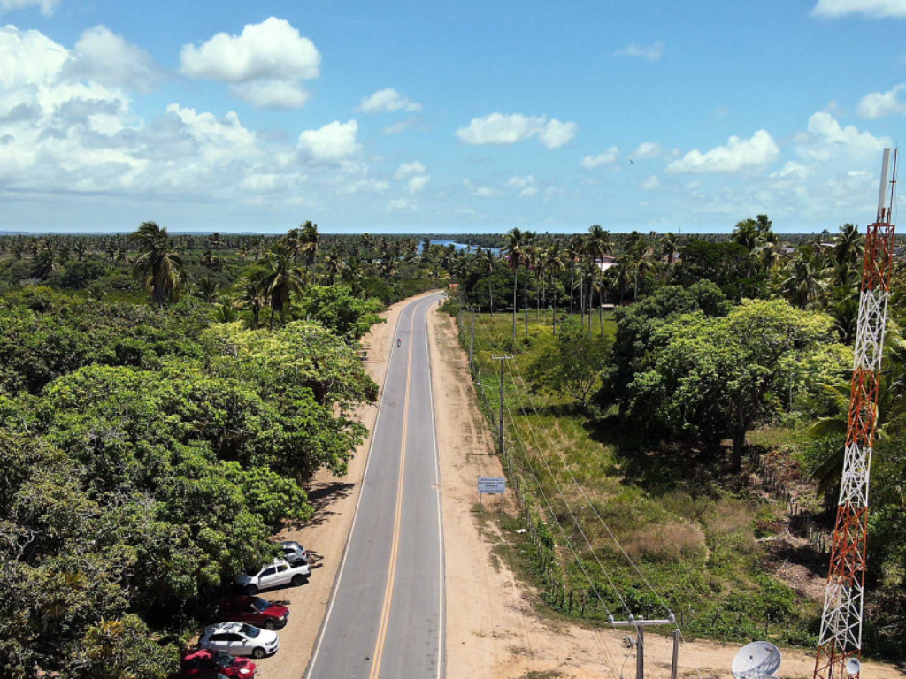

O Sergipe é o menor estado brasileiro em extensão territorial, localizado na Região Nordeste, e tem Aracaju como sua capital. Faz fronteira com a Bahia ao sul e oeste, com Alagoas ao norte, sendo banhado pelo Oceano Atlântico a leste. Sua economia destaca-se pelo extrativismo mineral, principalmente de petróleo, gás natural e potássio, além do cultivo histórico de cana-de-açúcar e laranja. No turismo, os principais atrativos são as praias fluviais e marítimas da capital, a histórica cidade de São Cristóvão e os impressionantes Cânions do Xingó no Rio São Francisco. O nome do estado tem origem tupi e significa "no rio dos siris".

Voltar